About KOUSATEN
今回展示するギャラリーで開催されてきたグループ展は、ひとつのテーマに向かってメンバーそれぞれが表現した作品集のような展示が多い印象でした。
そこで私が考えたのは、「人やスキルが交わった作品は、どんな展示をつくれるだろう？」「自己表現よりも先に、来場者が楽しめることを第一に考えた展示では、なにが起こるだろう？」
ひたすら来場者を楽しませる展示をつくりたい！
交差展は、そこから始まった展示です。
そう思い立ってから、声をかけまわって、メンバーを一から集めました。メンバーを集める時に注意したことは、人柄はもちろん、それぞれが持つ制作への熱量の大きさ。熱量の差があるグループでの活動はとても難しいからです。
そう思い立ってから、声をかけまわって、メンバーを一から集めました。メンバーを集める時に注意したことは、人柄はもちろん、それぞれが持つ制作への熱量の大きさ。熱量の差があるグループでの活動はとても難しいからです。
メンバーは初対面の人も多かったものの、すぐに打ち解け、そこから約1年間みんなで展示に向き合ってきました。
リーダーとして気をつけていたことは、メンバー自身も「楽しい」と思いながら制作できること。みんなの熱量が迷子にならないように、話し合うべきことや決めるべきことなどはなるべく丁寧に整理しました。
メンバー全員が、真剣に向き合ってつくりあげる展示、交差展。
この展示では、来場者を楽しませること以外に、実はもうひとつ目標があります。
それは、本気で制作することの楽しさを伝えること。芸術学部の制作意欲をあげたいという私たちの思いも込めています。
あなたを、楽しませます。
全力で楽しませにいきます。
ぜひ展示会場でお待ちしています。
グループ展示「交差展」
- 会期
- 2026年10月21日(水) - 2026年10月26日(月) ／ 9:00 - 17:00
※10月24日(土)は休館 ※10月26日(月)は14:00まで - 会場
- 九州産業大学内 15号館横 アートギャラリー
- Contact
- Instagram: @exhibit_kousaten
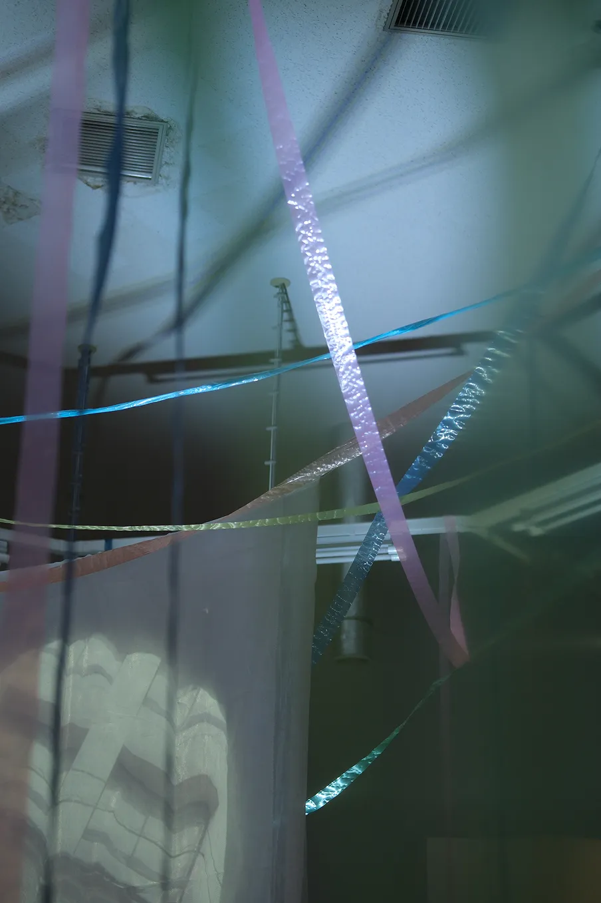
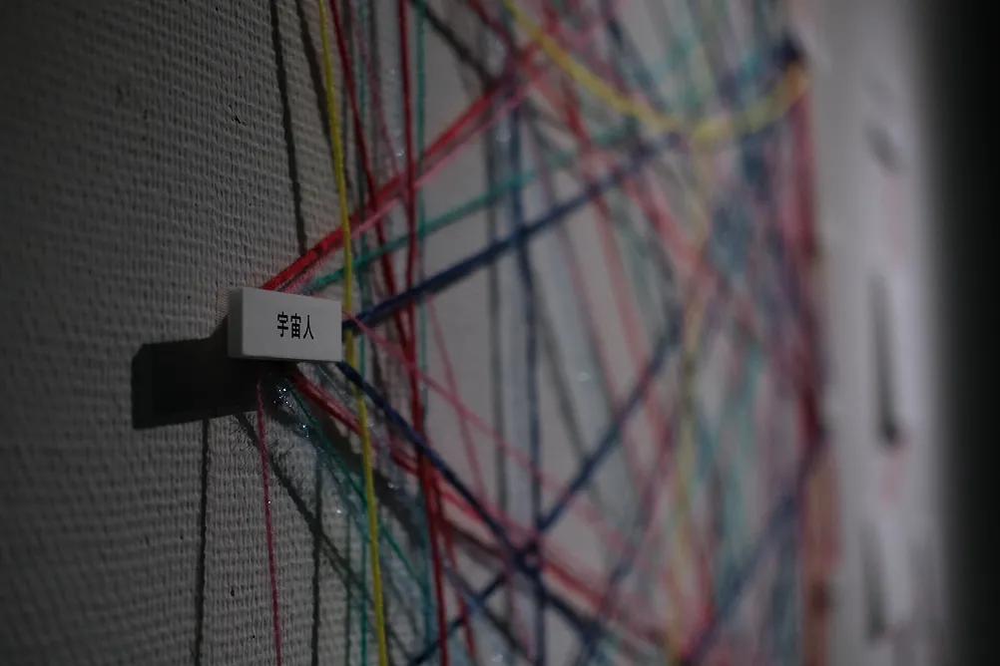
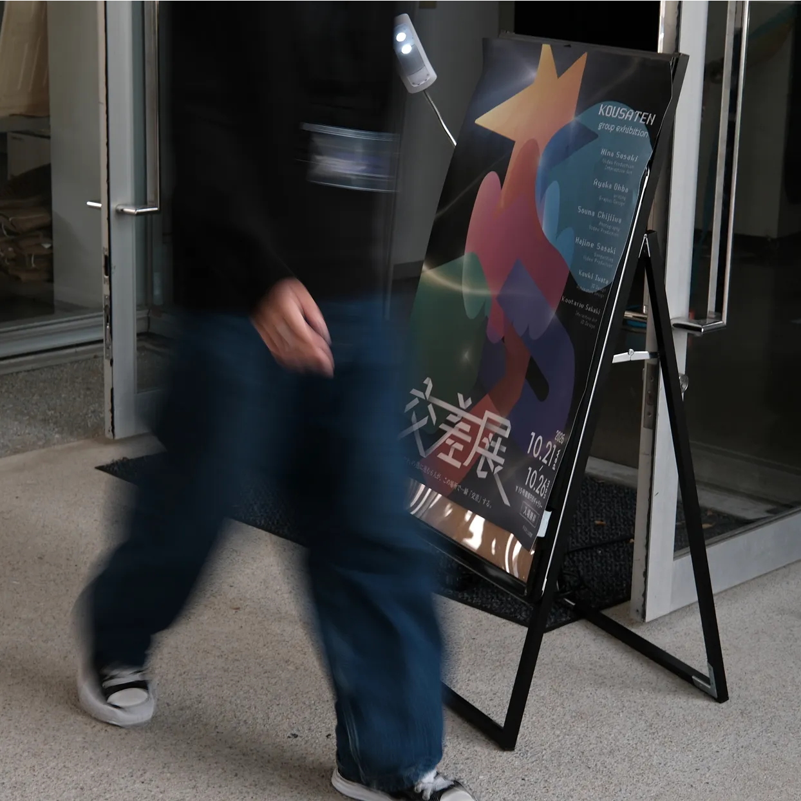
Exhibit
交差点
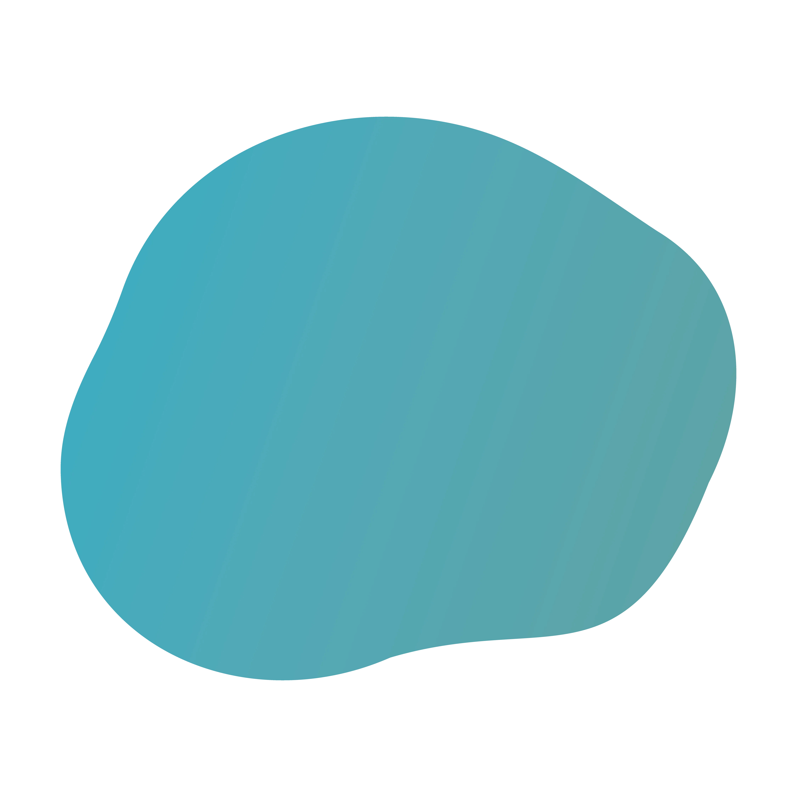
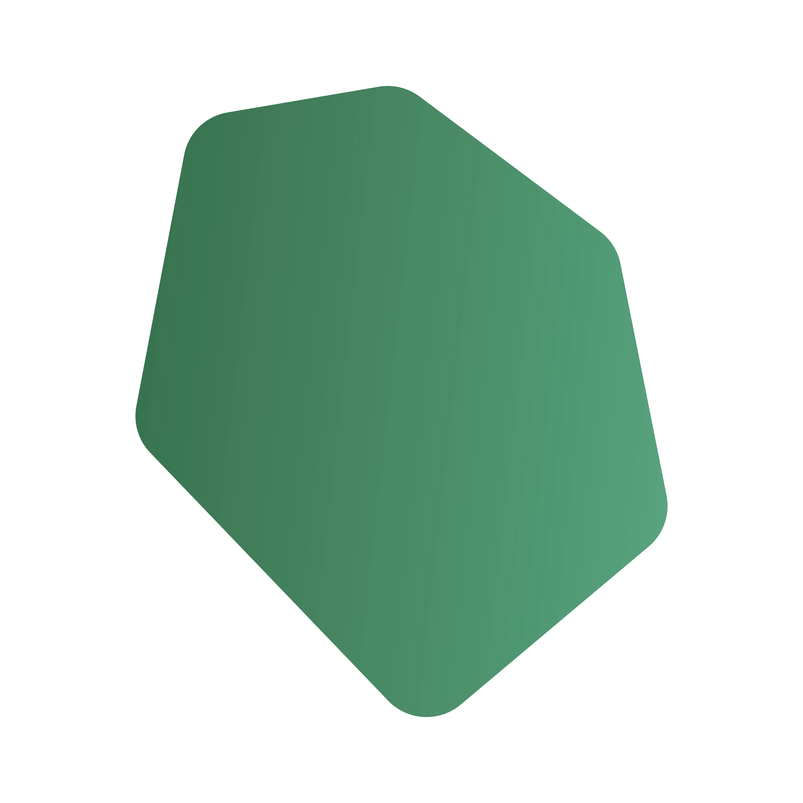
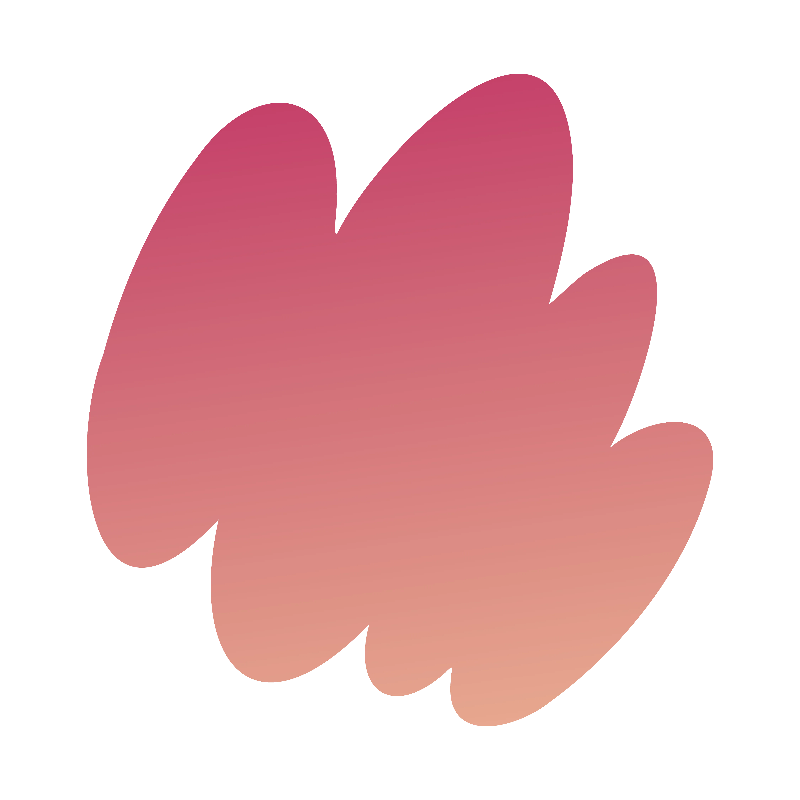
本展示の作品は人やスキルが交差している。
メンバー全員が交差した作品も作ろうと制作した作品が、この「交差点」。
ベースとなっているのは、メンバー全員で集めまわった交差の写真。
それぞれがバランスを取り、作られた交差展。
あなたはどの交差に惹かれる？
Category
:
映像
Member
:
ALL
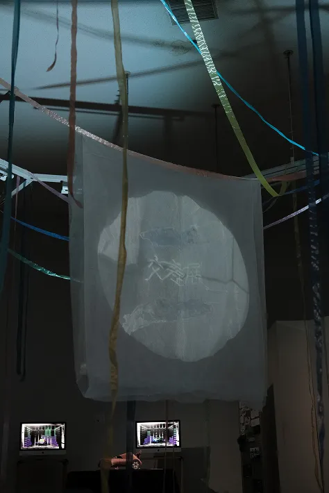
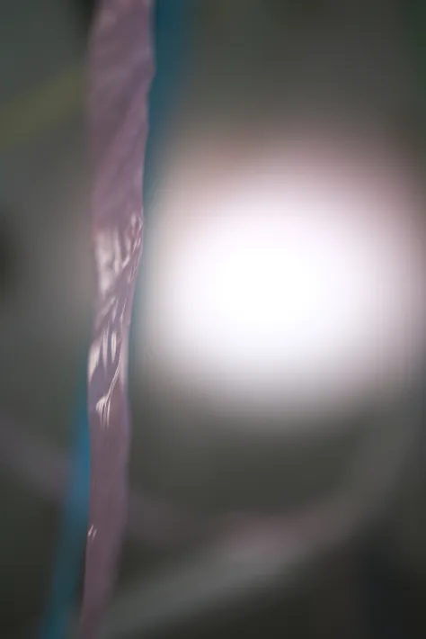
CROSSRISE
混ざり合うことで生まれるひとつの世界観。
交差とは、単なる分岐点ではなく、新たな可能性が生まれる場所。
そこから何が生まれるのか。
探究心と創作欲を掻き立てるサウンドと空間を目指した。
Category
:
音楽 照明
Member
:
Sasaki Hajime Sasaki Hina
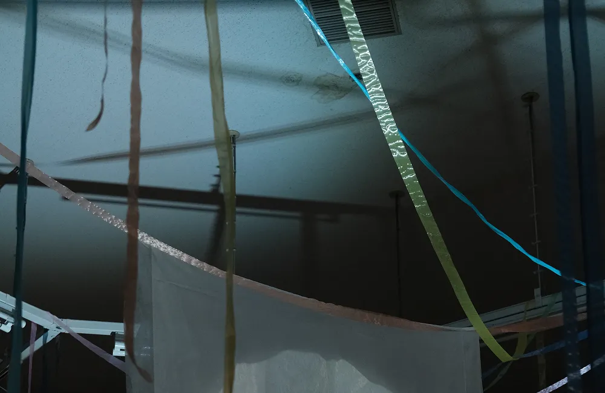
yoake / shinkai
見えないものを、言葉にする。
異なる表現が交わる場所に生まれた、ZINEと映像、そして空間。
写真の一部は、レジンで製作したレンズを通して撮影している。
ゆらぐ朝日の光からイメージを膨らませ、涙に滲む視界を魚の眼差しに重ねた。
地上と水中、人と魚。
それぞれの視点を反転させながら、言葉を編んでいく。
海の外を知らない魚。
空の底を知らない鳥。
わたしたちは、
どこまでを世界と呼ぶのだろう。
Category
:
ZINE 映像
Member
:
Ohba Ayaka Chijiziwa Souma
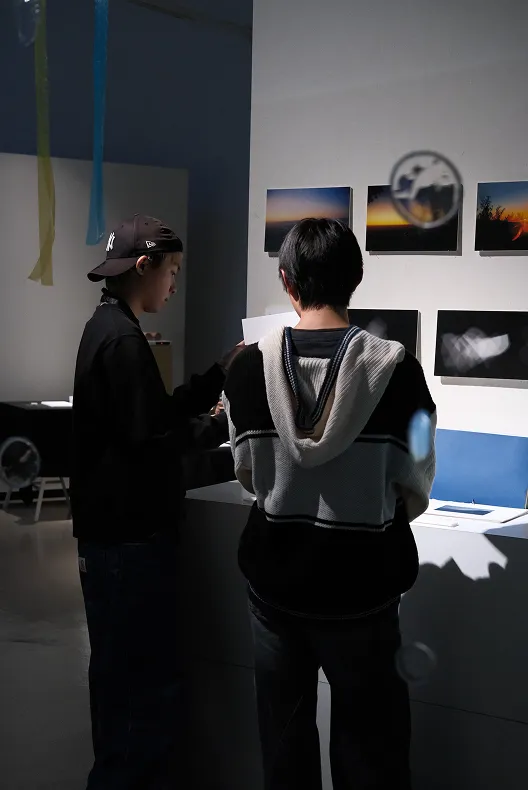
ELEVATE THE VIBES
Category
:
自動車デザイン 3DCG/p>
Member
:
Iwata Kouki Sakaki Koutarou
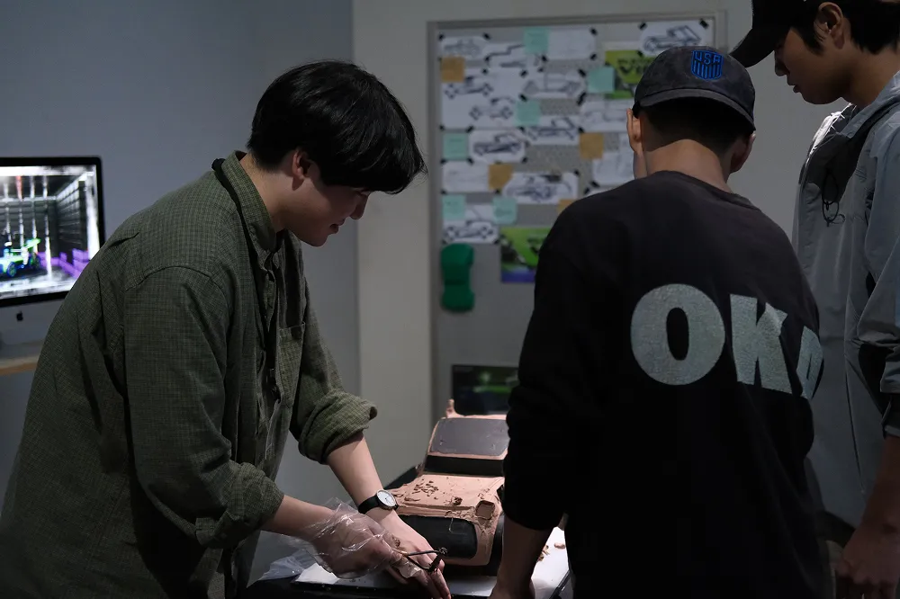
MOVE - TOMOSHIBI
これからあなたに体験していただくこの空間は、私たちに灯る火。
さまざまに輝いていた火が集まって、交差した先には何が起こるだろう？
さあ、あなたの胸にも火を灯して。
いざ交差展の世界へ。
Category
:
インタラクティブアート
Member
:
Sasaki Hina Sakaki Koutarou
MOVE - OVERLAP
体験者自身の手の簡単な動きでキービジュアルのオブジェクトを作成できる。
個々だったメンバーが集まって、それぞれに輝いて交差する。
自身を無理に変形せずとも、展示に欠かせない大切な1ピースになる。
そんな交差展のカタチを抽象的に表現した作品である。
Category
:
インタラクティブアート
Member
:
Sasaki Hina Sakaki Koutarou
MOVE - NAIKAKU
また、人の個性は、ひとつの言葉や特徴だけでは語り尽くせない。ひとりの人間の中にも、さまざまな経験や感情、価値観、そしてまだ表に現れていない可能性が存在している。画面の中心に広がる虹色は、そうした自分自身の中にある多様な要素を象徴している。
一方で、その周囲を黒背景にすることで、内側に秘められた色彩を際立たせた。
本作を通して、自分の中にある多様な可能性に目を向け、これまで気づかなかった一面を発見してほしい。そして、自分自身の殻を破り、新たな表現や創作へと踏み出すきっかけになればと願っている。
Category
:
インタラクティブアート
Member
:
Sakaki Koutarou Sasaki Hina
未来の自分
誰かが思い描く未来。
互いの線が交差するとき
何が見えるかな。
Category
:
インタラクティブアート
Member
:
Sakaki Koutarou Sasaki Hina
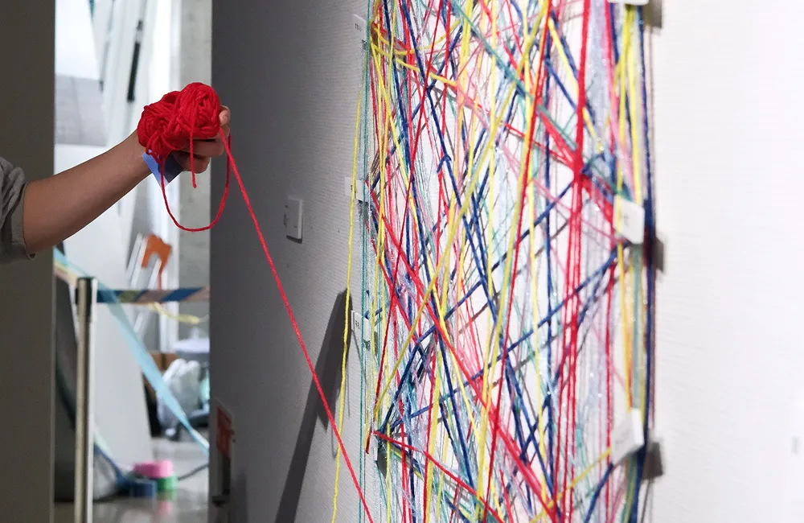
Member